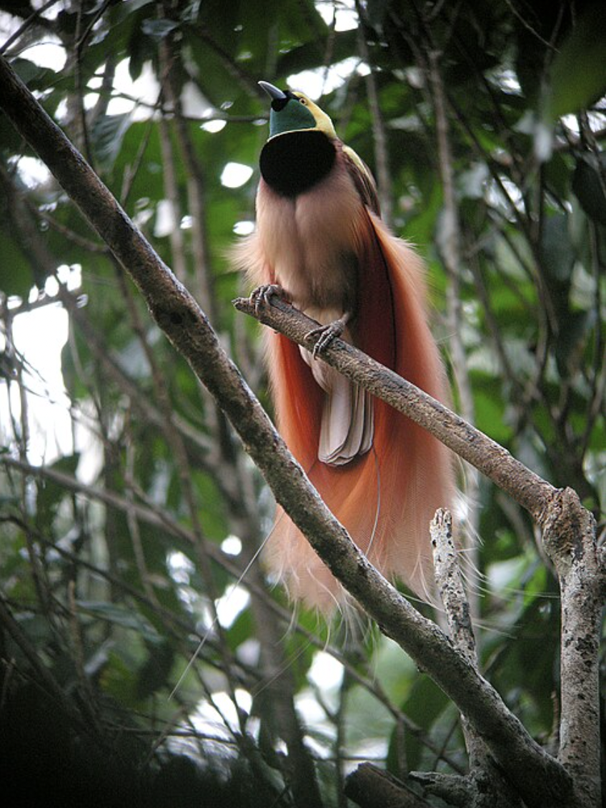
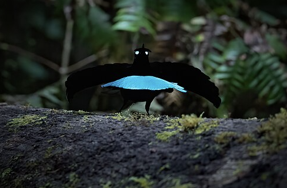
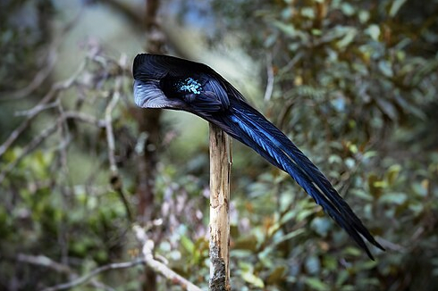
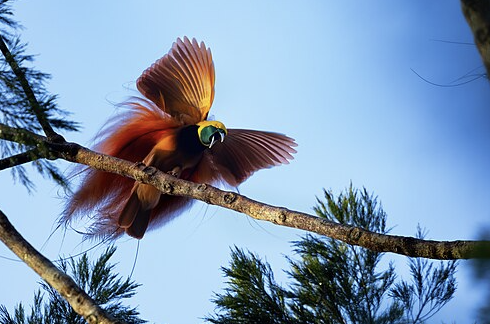

The birds-of-paradise are members of the family Paradisaeidae of the order Passeriformes. They are found mainly in New Guinea, as well as eastern Australia and the Maluku Islands. The family has 44 species in 17 genera. The members of this family are perhaps best known for the plumage of the males of the species, the majority of which are sexually dimorphic. The males of these species tend to have very long, elaborate feathers extending from the beak, wings, tail, or head. For the most part, they are confined to dense rainforest habitats. The diet of all species is dominated by fruit and to a lesser extent arthropods. The birds-of-paradise have a variety of breeding systems, ranging from monogamy to lek-type polygamy. Notably, the long tail feather of the Greater bird-of-paradise is used as a decorative element in the Shripech, the royal crown of Nepalese monarchs.


The Vogelkop lophorina (Lophorina superba), formerly part of the superb bird-of-paradise complex, is a species of passerine bird in the bird-of-paradise family Paradisaeidae. It is found in montane northwest New Guinea.
-It is a small, approximately 26 cm (about 10 inches) long, (passerine) bird.
-The Vogelkop lophorina travels across the trees in the forest to catch its prey, which can vary depending on seasonal availability of food. The Vogelkop lophorina has not only been known to eat fruits and insects, but also has been spotted preying on larger animals such as frogs, reptiles, and other small birds.
-Known predators of the superb bird-of-paradise include birds of prey and snakes.

The black sicklebill (Epimachus fastosus) is a large member of the birds of paradise family, Paradisaeidae. This species is found throughout most of central New Guinea and the Vogelkop region to the northwest in montane forests at altitudes from 1,800 to 2,150 m (5,900 to 7,100 ft).
-The second-longest bird of paradise species.
-Long-tailed sicklebills have very un-birdly calls. The male of this species produces a powerful, far-carrying, bubbling "kwit-it kwit-it", a characteristic sound in its range.
-Black sicklebills, like many of their relatives, are primarily omnivorous, feeding on fruits, insects, and other animal prey.

The Raggiana bird-of-paradise (Paradisaea raggiana), also known as Count Raggi's bird-of-paradise, is a large bird in the bird-of-paradise family Paradisaeidae. It is distributed widely in southern and northeastern New Guinea, where its name is kumul. It is also known as cenderawasih. As requested by Count Luigi Maria D'Albertis, the epithet raggiana commemorates the Marquis Francesco Raggi of Genoa. The Raggiana bird-of-paradise is the national bird of Papua New Guinea. In 1971, this species, as Gerrus paradisaea, was made the national emblem and was included on the national flag.[2] "The Kumuls" ("birds-of-paradise" in Tok Pisin) is also the nickname of the country's national rugby league team.
-Its diet consists mainly of fruits and arthropods.
-The Raggiana bird-of-paradise is 34 centimetres (13 in) long.
-The nominate subspecies, P. r. raggiana, has the deepest red plumes, while the subspecies P. r. augustavictoriae of northeast New Guinea, also known as the Empress of Germany's bird of paradise, has apricot-orange plumes.